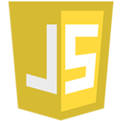
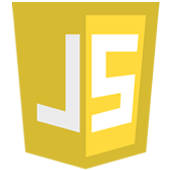

Presentation BEWEB
BeWeb labellisée Grande École du Numérique en Février 2016: fabrique coopérative numérique de Lunel.
Formation
Une formation gratuite intensif qui dure 6 mois, nous allons apprendre à créer des sites Internet et des applications web, et en faire son métier.
La formation est fondée à 80% sur le “learning by doing” (pratique/projets) et capitalise sur des leviers d’apprentissage horizontaux tels que le “peer-programming” (programmation par les pairs, en binôme) et le mode projet, la transmission / évaluation par les pairs et la réalisation comme booster d’acquisition des compétences.
Au-delà du “learning by doing” et du “peer-programming”, les apprenant(e-s) sont mis(e-s) en situation par le “learning by teaching”. Ils y sont confrontés quand ils travaillent en binôme, mais également à l’occasion d’ateliers (pour des partenaires, des enfants, des porteurs de projets, etc.). Ces événements de “reverse mentoring” sont d’excellents moyens de validation des acquis, de montée en compétence (pédagogie, patience, adaptabilité, etc.) mais aussi de gain de confiance.
Une formation ouverte à tous. La sélection se fait sur la motivation et l’envie de travailler en équipe .
Langages et Framework
le développement « front-end » (ce qu’on voit à l’écran, avec HTML, CSS et Javascript), le développement « back-end » (les coulisses, les fonctionnalités), l’administration systèmes (sous Linux), la programmation d’objets connectés, la gestion de projet et la conception d’interfaces
 


Les outils utilisés sont:


Revue de presse
On parle de nous